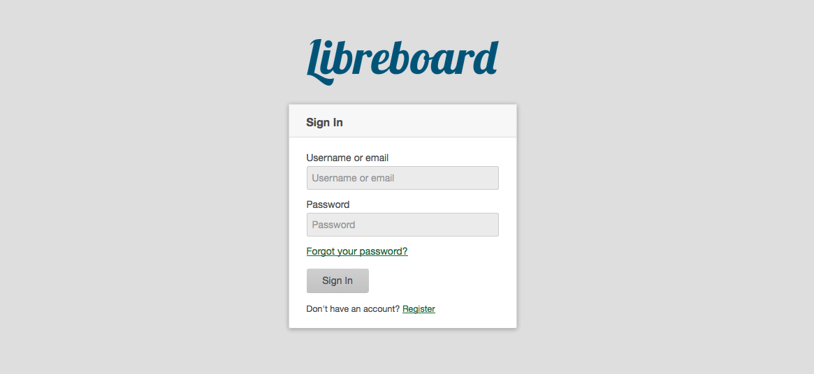
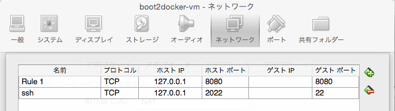
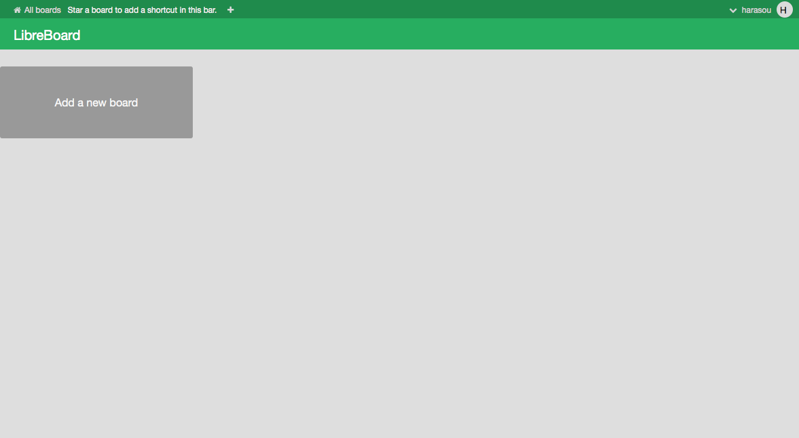
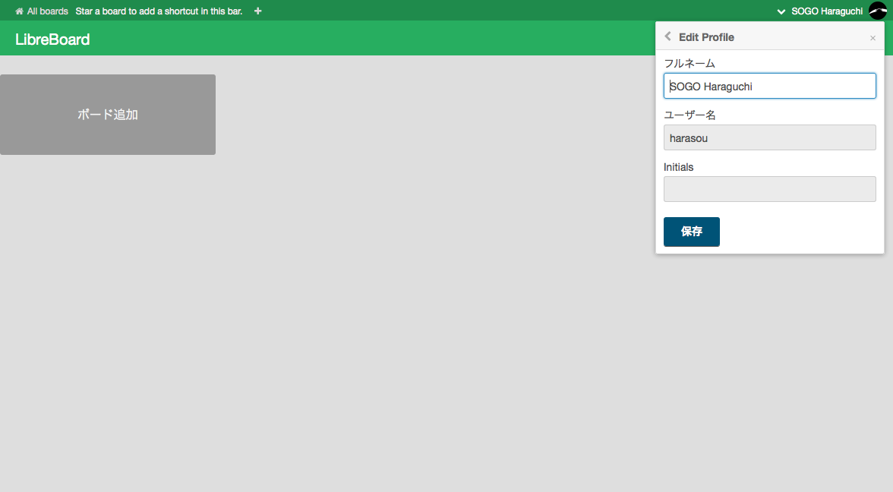
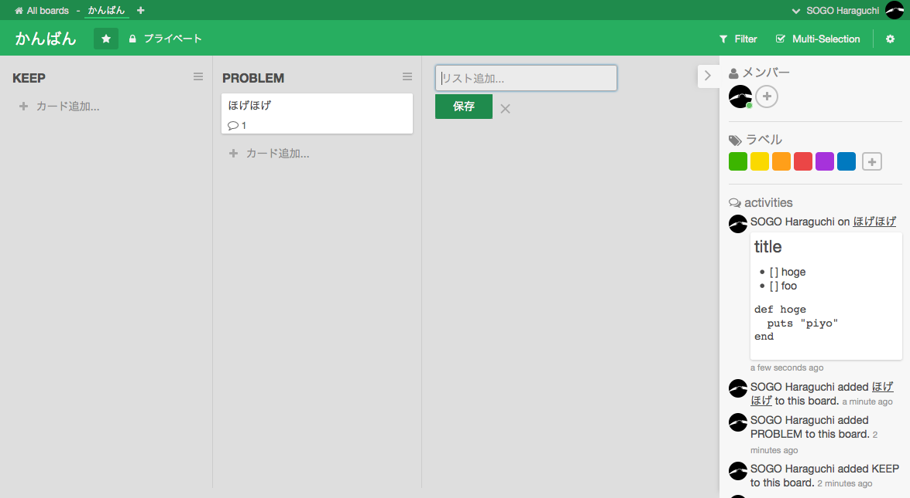

trello クローンの Libreboard を動かしてみた
社内で便利に活用しているかんばんソフトtrello 。このクローンである Libreboard を boot2docker で動かしてみた。

Libreboard とは
Libreboard は、node.js のフレームワークである meteor(メテオ) 、DB として MongoDB が使われている trello のクローン。
github に公開されているリポジトリには、Dockerfile が含まれているので、Mac 上の boot2docker で動かしてみる。
環境
- MacOSX Yosemite 10.10.4
- boot2docker v1.7.1
手順
boot2docker を最新化
123brew upgrade boot2dockerboot2docker update$(boot2docker shellinit)Libreboard のリポジトリを clone
12git clone git@github.com:libreboard/libreboard.gitcd libreboardLibreboard の docker image を build
docker buildしてみるとエラーになった。1234567891011121314151617181920212223242526272829303132$ docker build -t libreboard/libreboard .:Meteor 1.1.0.2 has been installed in your home directory (~/.meteor).Writing a launcher script to /usr/local/bin/meteor for your convenience.To get started fast:$ meteor create ~/my_cool_app$ cd ~/my_cool_app$ meteorOr see the docs at:docs.meteor.comBower: { [Error: Package autosize not found] stack: [Getter] }Bower: { [Error: git is not installed or not in the PATH] stack: [Getter] }Bower: { [Error: git is not installed or not in the PATH] stack: [Getter] }Bower: { [Error: git is not installed or not in the PATH] stack: [Getter] }Errors prevented bundling:While building the application:packages/bower/plugin/handler.js:191:1: Cannot read property 'name' ofundefined (compiling bower.json)at getDependencies (packages/bower/plugin/handler.js:191:1)at packages/bower/plugin/handler.js:203:1at Function._.each._.forEach (packages/underscore/underscore.js:113:1)at getDependencies (packages/bower/plugin/handler.js:202:1)at bowerHandler (packages/bower/plugin/handler.js:65:1)at Package (packages/bower/plugin/handler.js:229:1)The command '/bin/sh -c bash $METEORD_DIR/on_build.sh' returned a non-zero code: 1git がない模様。とりあえず、失敗したコンテナとイメージを削除しておく。
1234docker ps -adocker rm <コンテナID>docker imagesdocker rmi <イメージID>meteorhacks/meteord の再作成
Libreboard の Dockerfile を見ると
meteorhacks/meteord:onbuildの image を参照している。タグを含めると docker の image は以下のような階層になっている。1234libreboard/libreboard└ meteorhacks/meteord:onbuild└ meteorhacks/meteord:base└ debian:wheezyBower 実行時に git がないことが原因のようなので、
meteorhacks/meteord:baseのイメージに git を含めてやる。git を組み込んだ meteorhacks/meteord:onbuild を作成
123git clone https://github.com/meteorhacks/meteord.gitcd meteord/base/vim scripts/lib/install_base.sh123456789--- a/scripts/lib/install_base.sh+++ b/scripts/lib/install_base.sh#!/bin/bashset -eapt-get update -y-apt-get install -y curl bzip2 build-essential python\ No newline at end of file+apt-get install -y curl bzip2 build-essential python git123docker build -t meteorhacks/meteord:base .cd ../onbuild/docker build -t meteorhacks/meteord:onbuild .1234$ docker imagesREPOSITORY TAG IMAGE ID CREATED VIRTUAL SIZEmeteorhacks/meteord onbuild 4878b6e24949 About an hour ago 328.8 MBmeteorhacks/meteord base b76d66c56aee About an hour ago 328.8 MB作成した image はこんな感じ。
再度 Libreboard の docker image を build
12345678910111213141516171819202122232425262728293031323334353637383940$ docker build -t libreboard/libreboard .:Bower: { [Error: Package autosize not found] stack: [Getter] }Bower: autosize v3.0.6 successfully installedBower: perfect-scrollbar v0.6.2 successfully installednpm WARN package.json meteor-dev-bundle@0.0.0 No descriptionnpm WARN package.json meteor-dev-bundle@0.0.0 No repository field.npm WARN package.json meteor-dev-bundle@0.0.0 No README data> fibers@1.0.5 install /tmp/bundle-dir/bundle/programs/server/node_modules/fibers> node ./build.js`linux-x64-v8-3.14` exists; testingBinary is fine; exitingunderscore@1.5.2 node_modules/underscoresemver@4.1.0 node_modules/semverfibers@1.0.5 node_modules/fiberschalk@0.5.1 node_modules/chalk├── ansi-styles@1.1.0├── escape-string-regexp@1.0.3├── supports-color@0.2.0├── has-ansi@0.1.0 (ansi-regex@0.2.1)└── strip-ansi@0.3.0 (ansi-regex@0.2.1)eachline@2.3.3 node_modules/eachline└── type-of@2.0.1source-map-support@0.2.8 node_modules/source-map-support└── source-map@0.1.32 (amdefine@0.1.0)---> 62cc7d9b8cf4Removing intermediate container b32b995a9f68Removing intermediate container 248acfcb67b9Step 1 : MAINTAINER Maxime Quandalle <maxime@quandalle.com>---> Running in 55215a871ca7---> 0c5dc1c69d71Removing intermediate container 55215a871ca7Successfully built 0c5dc1c69d71npm の WARN は出ているが、とりあえず build 完了。
動作確認
コンテナの起動
Libreboard の Dockerfile に書かれている通り、コンテナを 2つ起動する。
なお、２つ目のコンテナが使用するイメージは、先ほど build したタグlibreboard/libreboardを指定。123docker run -d --name libreboard-db mongodocker run -d --link "libreboard-db:db" -e "MONGO_URL=mongodb://db" \-e "ROOT_URL=http://example.com" -p 8080:80 libreboard/libreboard1234$ docker psCONTAINER ID IMAGE COMMAND CREATED STATUS PORTS NAMESe97fcb032d48 libreboard/libreboard "/bin/sh -c 'bash $M 6 seconds ago Up 5 seconds 0.0.0.0:8080->80/tcp cranky_wilson45bcc5b47ffc mongo "/entrypoint.sh mong About a minute ago Up About a minute 27017/tcp libreboard-dbVirtualBox でポートフォワーディング
boot2docker 上では、8080 でアクセスすることができるが、Mac 上からはアクセスできない。このため、VirtualBox でポートフォワーディングの設定を行う。

ブラウザからアクセス
http://localhost:8080/ 適当にアカウント作ってログインして、カード作ってみた。
ログイン画面。

ボードの追加。

言語とプロファイルを設定。

カードの追加。Markdown もいけるっぽい。
